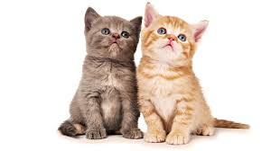

The Characters
Cats

Image credit to: CGDev
Coming from Egypt, cats were first domesticated 9,500 years ago. They are the chosen pets of queens like Cleopatra and the modern person alike.
Dogs

Image credit to: The Odyssey Online
Originated from Europe with a closeness to the gray wolf, dogs have been man's best friend since their domestication 16,000 years ago.
Coffee
Image credit to: Fruk Magazine
The earliest consumption of coffee dates back to 15th Century Yemen. Just a century later, it had reached much of the rest of the world.